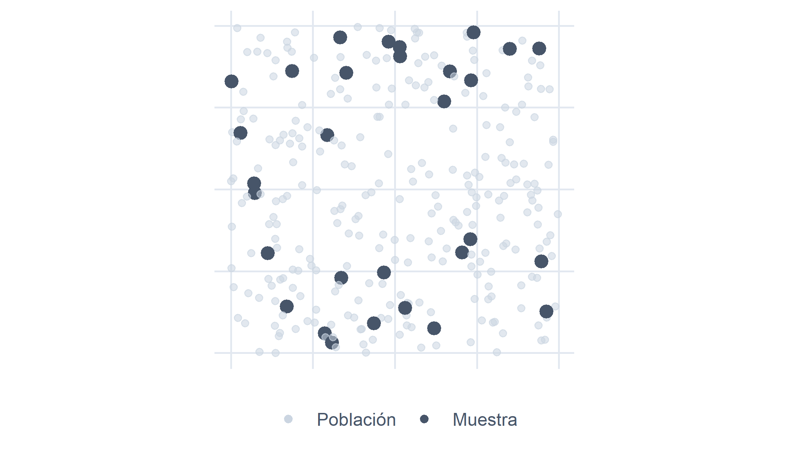
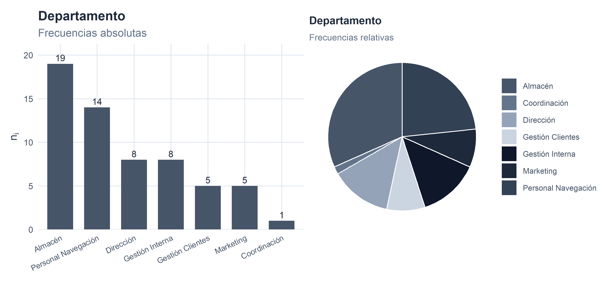
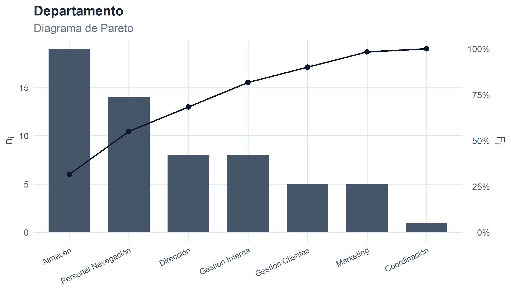
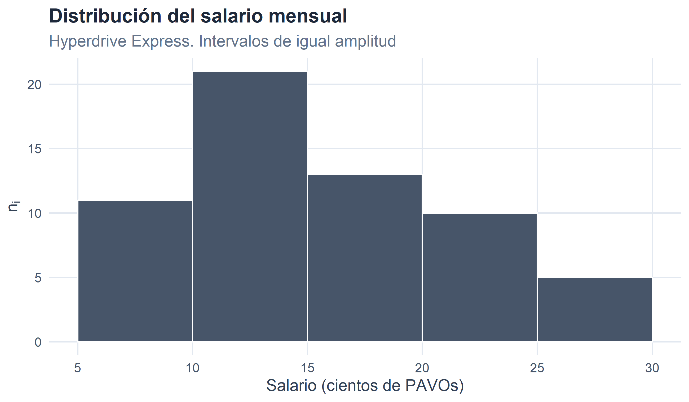
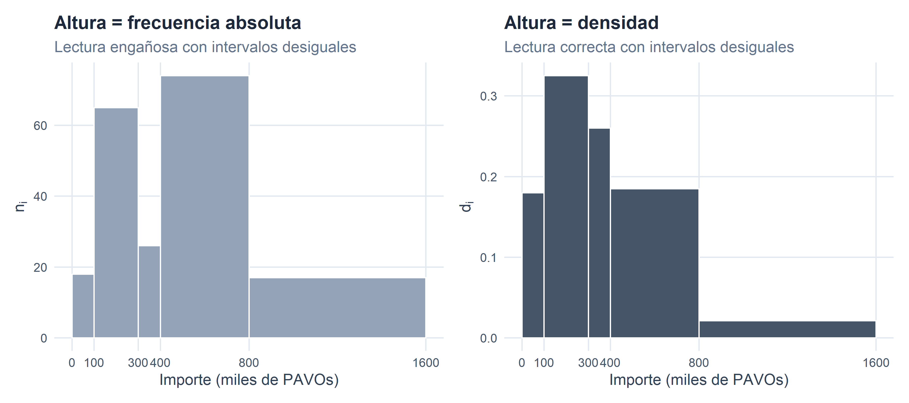

1 Estadística Económica y Empresarial.
Figura 1.1. Estadística: quiénes somos y a dónde vamos…
1.1 ¿Qué es la Estadística?
Hoy en día, todo el mundo habla de las estadísticas. Constantemente se hace referencia a ellas en los medios de comunicación, dando la sensación de que todo está medido y estructurado por estos entes que convierten la realidad empírica en una amalgama de números. Esto es especialmente relevante en el campo del comportamiento humano y las Ciencias Sociales, donde a diario recibimos estadísticas sobre el crecimiento de la economía en términos del PIB, el comportamiento de los precios medido mediante la inflación, o la intención de voto ante unas elecciones.
En este contexto, podemos definir la Estadística no solo como una disciplina científica, sino fundamentalmente como una ciencia instrumental. Esto significa que, más que un fin en sí misma, actúa como una herramienta metodológica al servicio de otras disciplinas, como la Economía o la Administración de Empresas.
Como ciencia instrumental, la estadística persigue un doble objetivo fundamental:
Recogida y análisis de datos que describan la realidad: Esta primera vertiente (que conforma la Estadística Descriptiva) se ocupa de la recopilación estructurada de los datos, su depuración y la caracterización de un conjunto de casos o individuos a través de dicha información empírica. Nos permite organizar la información para obtener una visión inicial, clara y concisa de lo que está ocurriendo.
Modelizar el comportamiento de la realidad cuando existe incertidumbre: El segundo gran objetivo consiste en aplicar modelos matemáticos para representar y entender el comportamiento de aquellos fenómenos económicos y empresariales que no son deterministas, es decir, que están sujetos a incertidumbre y al azar.
Finalmente, todo este proceso estructurado de recopilación, descripción y modelización probabilística no es un mero ejercicio teórico, sino que tiene un propósito final muy claro: servir de ayuda y tecnología para la toma de decisiones. Al transformar datos complejos y entornos inciertos en información medible, la estadística proporciona a empresas e instituciones el rigor necesario para tomar decisiones fundamentadas.
1.2 Estadística y Ciencia Económica.
La Ciencia Económica estudia cómo los agentes —familias, empresas, sectores, administraciones públicas— toman decisiones bajo restricciones de recursos. Esas decisiones no se toman en el vacío: dependen de los precios, los costes, las cantidades vendidas, el paro, el tipo de interés, la confianza del consumidor… es decir, de magnitudes medibles cuya evolución conocemos solo de forma parcial e imperfecta. Por esta razón, prácticamente cualquier rama de la Economía y de la Administración de Empresas necesita de la Estadística:
- La contabilidad y las finanzas requieren resumir grandes volúmenes de datos en indicadores que permitan diagnosticar la situación de una empresa o de un mercado.
- El marketing se apoya en encuestas, segmentaciones de clientes y modelos de comportamiento del consumidor que son, en última instancia, ejercicios estadísticos.
- La macroeconomía trabaja con series temporales (PIB, IPC, tasa de paro, tipo de cambio) cuya elaboración, depuración y análisis son tareas inequívocamente estadísticas.
- La dirección estratégica debe anticipar escenarios y cuantificar riesgos, lo que solo es posible con modelos de probabilidad.
Estos retos no son exclusivos de la economía planetaria. A lo largo del libro acompañaremos algunos ejemplos con datos extraídos del proyecto R-Stars, una base de 300 empresas ficticias dedicadas al transporte interestelar de mercancías, que en el siglo XXII operan rutas comerciales por buena parte de la galaxia conocida. Aunque las distancias se midan en años luz y los salarios se cobren en PAVOs, los problemas económicos son sorprendentemente parecidos: hay que cuadrar plantillas, fidelizar clientes, vigilar márgenes y, sobre todo, tomar decisiones con información incompleta. Como en cualquier mercado terrestre o galáctico, para ello hace falta Estadística.
1.3 Población, muestra e individuo.
Antes de aplicar ninguna técnica estadística necesitamos delimitar sobre qué vamos a trabajar. Para ello empleamos tres conceptos básicos:
Población: conjunto de todos los casos que comparten una característica que nos interesa estudiar. Por ejemplo, los hogares de Castilla-La Mancha, las empresas manufactureras con sede en la Unión Europea, o todas las compañías de transporte interestelar registradas en el sector R-Stars.
Individuo o caso: cada uno de los elementos que componen la población. Pese al término, un individuo no tiene por qué ser una persona: puede ser una empresa, un hogar, una transacción, una factura, un país, un día de cotización en bolsa o un carguero espacial.
Muestra: subconjunto de la población seleccionado con criterios de representatividad para estudiarlo en sustitución del total. Trabajar con la muestra resulta imprescindible cuando observar a todos los individuos de la población es inviable por motivos de coste, tiempo o accesibilidad. (Recorrer la galaxia entera empresa por empresa, por ejemplo, sale algo caro en combustible.)

Figura 1.2
Ejemplo. El Consejo Galáctico de Comercio quiere estudiar la satisfacción laboral del personal de pilotaje en el sector del transporte interestelar. La población son todos los pilotos registrados en activo; cada individuo es uno de esos pilotos. Como entrevistar a todos sería inviable (sin entrar en que muchos pasan media vida en hiperespacio), se selecciona una muestra de, pongamos, 2.500 pilotos, repartida proporcionalmente por sector galáctico, antigüedad de la flota y tipo de ruta, de modo que reproduzca a pequeña escala la estructura de la población.
1.4 El método estadístico: descripción e inferencia.
Las dos grandes formas de explotación de los datos que utilizaremos en este libro son:
La Estadística Descriptiva, cuyo objetivo es resumir y representar el comportamiento del conjunto de casos observados (sea una muestra, sea la población completa) con respecto a una o varias características. Sus herramientas son las tablas de frecuencias, los gráficos y las medidas de resumen (media, mediana, varianza, etc.).
La Estadística Inferencial, que busca extender las conclusiones obtenidas en una muestra al conjunto de la población. Para ello necesita modelos de probabilidad que permitan cuantificar la incertidumbre asociada a esa generalización, lo que en la práctica se traduce en intervalos de confianza y contrastes de hipótesis.
Esquemáticamente, el método inferencial consiste en avanzar de lo particular (la muestra) a lo general (la población) siguiendo estos pasos:
- Delimitar la población y la característica de interés.
- Seleccionar una muestra representativa.
- Medir la característica en los individuos de la muestra.
- Resumir los datos muestrales mediante la Estadística Descriptiva.
- Generalizar los resultados a la población empleando los modelos de probabilidad.
En este primer capítulo, y a lo largo del Bloque I del libro, nos centramos en los pasos (1) a (4). El resto del proceso se irá construyendo en los bloques de Probabilidad e Inferencia.
1.5 Un ejemplo de referencia: Hyperdrive Express.
Para ilustrar de forma uniforme los conceptos que siguen, utilizaremos un ejemplo extraído del universo R-Stars: la plantilla de Hyperdrive Express, una compañía galáctica (C.G.) de tamaño medio con sede en Miranda, en la Gran Nube de Magallanes. La empresa opera una flota renovada de 24 cargueros y algo más de un millar de rutas de largo alcance, y presenta un perfil financiero saneado —márgenes por encima del 60 % y una rentabilidad económica cercana al 45 %—, lo que la sitúa entre las medianas más rentables de su galaxia. Buena parte de su reputación se debe a las conexiones rápidas que enlazan Miranda con los sistemas más alejados del brazo exterior, aprovechando —y de ahí el nombre— los saltos de hipervelocidad que hace ya unas décadas dejaron de ser ciencia ficción.
La empresa tiene 60 trabajadores en plantilla. De cada uno de ellos disponemos de tres características:
- Salario bruto mensual, en cientos de PAVOs (variable cuantitativa).
- Nivel de estudios: Básicos, Medios o Universitarios (atributo ordinal).
- Departamento al que pertenece: Almacén, Gestión Interna, Gestión Clientes, Personal Navegación, Marketing, Coordinación o Dirección (atributo nominal).
Los datos que utilizaremos son sintéticos —en un caso real provendrían del sistema de Recursos Humanos de la compañía—.
Las primeras filas del fichero quedan así:
| Cód. | Nombre | Salario | N. Estudios | Departamento |
|---|---|---|---|---|
| E001 | Naomi Hirundo | 12 | Básicos | Almacén |
| E002 | Kyle Pavo | 10 | Medios | Personal Navegación |
| E003 | Kyle Vultur | 22 | Universitarios | Almacén |
| E004 | Faye Bucephala | 22 | Universitarios | Almacén |
| E005 | Morpheus Pyrrhula | 12 | Básicos | Coordinación |
| E006 | River Tachyeres | 15 | Medios | Gestión Clientes |
Tabla 1.1. Primeros casos del fichero de empleados de Hyperdrive Express.
A partir de este pequeño conjunto de datos vamos a ir introduciendo, sección a sección, los conceptos del capítulo.
1.6 Variables, atributos y escalas de medida.
Las características medidas sobre los casos no son todas del mismo tipo. La distinción fundamental es:
Variables (cuantitativas): características que se concretan en valores numéricos sobre los que tiene sentido realizar operaciones aritméticas. Ejemplos: el salario percibido, las unidades vendidas, los años de antigüedad o el número de años luz recorridos por una flota.
Atributos (cualitativos o factores): características que se concretan en categorías, no en cifras. Aunque podamos asignarles códigos numéricos, las operaciones aritméticas sobre esos códigos carecen de sentido. Ejemplos: el nivel de estudios, el sector productivo, el planeta de origen o el estado civil.
A su vez, según el tipo de información que aportan, distinguimos tres escalas de medida:
| Escala | Tipo de característica | Operaciones admisibles | Ejemplo |
|---|---|---|---|
| Nominal | Atributo | Igualdad / distinción | Departamento de un empleado |
| Ordinal | Atributo | Igualdad y orden | Nivel de estudios (Básicos < Medios < Universitarios) |
| Métrica (intervalo o razón) | Variable | Igualdad, orden, suma, diferencia, cociente | Salario en PAVOs |
Tabla 1.2
La escala condiciona qué medidas de resumen y qué gráficos son aplicables. Calcular la media del Departamento no tiene ningún sentido (¿cuánto es la media entre Almacén y Marketing?); sí lo tiene calcular su moda (el departamento más frecuente). En cambio, para el salario podemos calcular media, mediana, varianza o cualquier otra medida numérica de las que veremos en el capítulo siguiente.
1.7 Distribuciones de frecuencias.
Una vez recogidos los datos brutos (la tabla de casos × características), el siguiente paso es organizarlos. La forma más básica de hacerlo es construir, para cada característica, una distribución de frecuencias: una tabla que indica cuántos casos toman cada valor (o caen en cada categoría).
Denotemos por \(x_i\) los valores que toma la característica (o las categorías, si es un atributo), ordenados cuando ello tenga sentido. Las cantidades de interés son:
- Frecuencia absoluta \(n_i\): número de casos que toman el valor \(x_i\).
- Frecuencia total \(N = \sum_i n_i\): número total de casos.
- Frecuencia absoluta acumulada \(N_i = \sum_{j \le i} n_j\): número de casos con valor menor o igual que \(x_i\).
- Frecuencia relativa \(f_i = n_i / N\): proporción de casos con valor \(x_i\). Cumple \(\sum_i f_i = 1\).
- Frecuencia relativa acumulada \(F_i = \sum_{j \le i} f_j\). Cumple \(F_{\text{último}} = 1\).
Las frecuencias acumuladas solo tienen sentido cuando los valores \(x_i\) se pueden ordenar: en variables, en atributos ordinales o en intervalos. En un atributo nominal (departamento, sector, color), no hay un orden natural y la acumulación carece de interpretación.
1.7.1 Distribución de frecuencias de una variable.
Empezamos por el salario, que es una variable cuantitativa. La distribución de frecuencias se construye agrupando por los valores distintos de \(x_i\):
| \(x_i\) (Salario) | \(n_i\) | \(N_i\) | \(f_i\) | \(F_i\) |
|---|---|---|---|---|
| 8 | 2 | 2 | 0.0333 | 0.0333 |
| 9 | 2 | 4 | 0.0333 | 0.0667 |
| 10 | 7 | 11 | 0.1167 | 0.1833 |
| 12 | 5 | 16 | 0.0833 | 0.2667 |
| 15 | 16 | 32 | 0.2667 | 0.5333 |
| 18 | 7 | 39 | 0.1167 | 0.6500 |
| 20 | 6 | 45 | 0.1000 | 0.7500 |
| 22 | 6 | 51 | 0.1000 | 0.8500 |
| 25 | 4 | 55 | 0.0667 | 0.9167 |
| 30 | 5 | 60 | 0.0833 | 1.0000 |
Tabla 1.3. Distribución de frecuencias del salario en Hyperdrive Express (cientos de PAVOs).
Lectura: la columna \(n_i\) indica cuántos empleados cobran exactamente \(x_i\) cientos de PAVOs; \(N_i\), cuántos cobran como máximo esa cantidad; \(f_i\) y \(F_i\) son las versiones relativas. De \(F_i\) se obtiene, por ejemplo, el porcentaje de la plantilla que cobra como mucho cada salario.
1.7.2 Distribución de frecuencias de un atributo ordinal.
| \(x_i\) (Nivel de estudios) | \(n_i\) | \(N_i\) | \(f_i\) | \(F_i\) |
|---|---|---|---|---|
| Básicos | 11 | 11 | 0.1833 | 0.1833 |
| Medios | 24 | 35 | 0.4000 | 0.5833 |
| Universitarios | 25 | 60 | 0.4167 | 1.0000 |
Tabla 1.4. Distribución de frecuencias del nivel de estudios de la plantilla.
Aquí las frecuencias acumuladas sí tienen sentido porque las categorías están ordenadas (Básicos → Medios → Universitarios). Podemos leer, por ejemplo, qué proporción de la plantilla tiene como mucho estudios medios.
1.7.3 Distribución de frecuencias de un atributo nominal.
| \(x_i\) (Departamento) | \(n_i\) | \(f_i\) |
|---|---|---|
| Almacén | 19 | 0.3167 |
| Personal Navegación | 14 | 0.2333 |
| Dirección | 8 | 0.1333 |
| Gestión Interna | 8 | 0.1333 |
| Gestión Clientes | 5 | 0.0833 |
| Marketing | 5 | 0.0833 |
| Coordinación | 1 | 0.0167 |
Tabla 1.5. Distribución de frecuencias del departamento.
En este caso no se han incluido \(N_i\) ni \(F_i\): dado que Departamento es un atributo nominal, no existe un orden natural entre sus categorías y acumular pierde significado (¿qué querría decir “porcentaje acumulado hasta Marketing”?).
1.7.4 Distribuciones agrupadas en intervalos.
Cuando una variable toma muchos valores distintos (o es continua), la tabla anterior se vuelve poco útil: tendría una fila por casi cada caso. En esa situación se agrupan los valores en intervalos o clases, obteniendo una distribución de frecuencias agrupada.
Para el intervalo \(i\)-ésimo \((L_{i-1}, L_i]\) definimos:
- \(L_{i-1}\), \(L_i\): extremos inferior y superior del intervalo.
- \(n_i\): frecuencia absoluta del intervalo (número de casos en él).
- Marca de clase \(x_i = (L_{i-1} + L_i) / 2\): punto medio, que se utiliza como representante numérico del intervalo.
- Amplitud \(c_i = L_i - L_{i-1}\).
- Densidad de frecuencia \(d_i = n_i / c_i\): número de casos por unidad de amplitud.
Por convenio, los intervalos son cerrados por la derecha y abiertos por la izquierda, salvo el primero, que se toma cerrado por ambos extremos para no excluir el menor valor observado.
Agrupemos el salario de la empresa en intervalos de 5 cientos de PAVOs de amplitud:
| Intervalo | \(x_i\) | \(c_i\) | \(n_i\) | \(N_i\) | \(f_i\) | \(F_i\) | \(d_i\) |
|---|---|---|---|---|---|---|---|
| [5,10] | 7.5 | 5 | 11 | 11 | 0.1833 | 0.1833 | 2.2 |
| (10,15] | 12.5 | 5 | 21 | 32 | 0.3500 | 0.5333 | 4.2 |
| (15,20] | 17.5 | 5 | 13 | 45 | 0.2167 | 0.7500 | 2.6 |
| (20,25] | 22.5 | 5 | 10 | 55 | 0.1667 | 0.9167 | 2.0 |
| (25,30] | 27.5 | 5 | 5 | 60 | 0.0833 | 1.0000 | 1.0 |
Tabla 1.6. Distribución agrupada del salario en intervalos de 5 cientos de PAVOs.
Por qué importa la densidad. Cuando todos los intervalos tienen la misma amplitud, \(n_i\) y \(d_i\) se diferencian solo en un factor común y dan la misma idea visual. Pero cuando las amplitudes son distintas, comparar frecuencias absolutas resulta engañoso: un intervalo muy ancho puede contener muchos casos simplemente por ser ancho. La densidad \(d_i\) corrige este efecto y permite comparar de forma honesta intervalos heterogéneos. Volveremos sobre esto al construir el histograma.
1.7.5 ¿Cuántos intervalos y de qué anchura?
En el ejemplo anterior fijamos los intervalos “a ojo”: cinco cortes de amplitud 5. Aunque la elección resulta razonable, cualquier lectura crítica preguntaría por qué cinco y no siete o diez. Existen criterios objetivos para responder.
El más clásico es la regla de Sturges, que fija el número de intervalos como
\[k = 1 + \log_2 N.\]
La intuición subyacente es que, si los datos siguen una distribución aproximadamente simétrica y campaniforme, ese es el número de celdas que absorbe con soltura una binomial de \(N\) ensayos. No es una demostración, sino una aproximación con base teórica, pero funciona sorprendentemente bien para tamaños muestrales pequeños o medianos (entre unas decenas y unos pocos cientos de casos).
Aplicada a los \(N = 60\) empleados de Hyperdrive Express:
\[k = 1 + \log_2 60 \approx 6,91 \approx 7 \text{ intervalos.}\]
Una vez fijado \(k\), los extremos se calculan dividiendo el recorrido de la variable (\(\max - \min\)) en \(k\) partes iguales:
\[c = \frac{\max - \min}{k}, \qquad L_0 = \min, \qquad L_i = L_{i-1} + c.\]
Con salarios entre 8 y 30 cientos de PAVOs, la amplitud teórica sería \(c \approx 3,14\), y los cortes teóricos vendrían dados por \(8,00;\ 11,14;\ 14,29;\ 17,43;\ 20,57;\ 23,71;\ 26,86;\ 30,00\). Poco cómodos para presentar en un eje.
Ese es exactamente el punto donde la teoría se encuentra con la práctica: los cortes teóricos casi siempre se redondean a valores cómodos —múltiplos de 5, 10 o 100, según la escala de la variable—, incluso a costa de mover \(k\) en una unidad. Aquí, redondear a múltiplos de 5 lleva a los cortes \(5;\ 10;\ 15;\ 20;\ 25;\ 30\) con los que ya hemos venido trabajando: \(k = 5\) intervalos en lugar de 7, pero mucho más legibles. En estadística descriptiva, la comunicación pesa tanto como el criterio numérico.
La regla de Sturges tiene un defecto conocido: al depender solo de \(N\), ignora la forma de la distribución. Cuando los datos son fuertemente asimétricos o contienen valores atípicos, tiende a producir demasiados intervalos vacíos en las colas. Para esos casos existen alternativas basadas en la dispersión real de los datos. La más popular es la regla de Freedman-Diaconis, que fija la anchura del intervalo como
\[c = 2\,\frac{\text{IQR}}{N^{1/3}},\]
donde IQR es el recorrido intercuartílico (la distancia entre el primer y el tercer cuartil). Al sustituir el rango total por el IQR, la regla se vuelve robusta frente a colas y outliers. Una variante próxima, la regla de Scott, usa la desviación típica en lugar del IQR y funciona bien cuando la distribución es aproximadamente normal.
Como estos dos últimos métodos requieren medidas de dispersión que definiremos en el capítulo siguiente, aplazaremos su cálculo hasta entonces. A partir del capítulo 2, cuando dispongamos de cuartiles y desviación típica sobre esta misma plantilla, la elección del número de intervalos podrá razonarse con cualquiera de las tres reglas.
1.8 Representaciones gráficas.
Las distribuciones de frecuencias ofrecen una visión organizada de los datos, pero no siempre la más intuitiva. La representación gráfica completa la fotografía añadiendo una lectura inmediata. Los gráficos estándar dependen del tipo de característica que se está representando.
1.8.1 Atributos: barras, sectores y Pareto.
Para los atributos los tres gráficos clásicos son el diagrama de barras, el gráfico de sectores y el diagrama de Pareto.

Figura 1.3
El diagrama de Pareto ordena las categorías de mayor a menor frecuencia y superpone la frecuencia relativa acumulada. Es habitual en gestión empresarial (análisis ABC de inventarios, control de calidad), porque permite identificar de un vistazo qué categorías concentran la mayor parte del fenómeno (la conocida regla “80-20”):

Figura 1.4
1.8.2 Variables agrupadas: el histograma.
Para una variable agrupada en intervalos, la representación natural es el histograma: una sucesión de rectángulos contiguos donde
- la base de cada rectángulo es el intervalo \((L_{i-1}, L_i]\),
- y la altura es la densidad \(d_i = n_i / c_i\).
Con esta convención, el área de cada rectángulo es igual a la frecuencia absoluta \(n_i\), y por tanto el área total del histograma coincide con el número total de casos \(N\). Esta propiedad es la que hace correcto comparar visualmente intervalos de amplitudes distintas.
1.8.2.1 Intervalos de igual amplitud.

Figura 1.5
Como todos los intervalos tienen la misma amplitud (\(c_i = 5\) cientos de PAVOs), las alturas \(n_i\) y las densidades \(d_i\) son proporcionales y la lectura del gráfico es directa.
1.8.2.2 Intervalos de distinta amplitud.
Cuando los datos están más concentrados en una zona, suele convenir usar intervalos más estrechos allí y más anchos en las colas. Para ilustrarlo, trabajaremos con una segunda muestra: el importe anual de los contratos (en miles de PAVOs) firmados con los 200 mayores clientes corporativos de Hyperdrive Express a lo largo del último ejercicio.
| Intervalo | \(n_i\) | \(c_i\) | \(x_i\) | \(d_i\) |
|---|---|---|---|---|
| [0,100] | 18 | 100 | 50 | 0.1800 |
| (100,300] | 65 | 200 | 200 | 0.3250 |
| (300,400] | 26 | 100 | 350 | 0.2600 |
| (400,800] | 74 | 400 | 600 | 0.1850 |
| (800,1.6e+03] | 17 | 800 | 1200 | 0.0213 |
Tabla 1.7. Importe anual de contratos con clientes corporativos (miles de PAVOs). Intervalos de distinta amplitud.
Si dibujamos el histograma usando como altura la frecuencia absoluta \(n_i\), los intervalos anchos parecen “ganar” simplemente porque acumulan más casos por ser más amplios. Si en cambio usamos la densidad \(d_i\), estamos comparando manzanas con manzanas (o, dado el contexto, cargueros con cargueros):

Figura 1.6
La comparación visual es elocuente: el intervalo más ancho deja de dominar el gráfico en cuanto pasamos a la versión basada en densidad, que es la única conceptualmente correcta cuando los intervalos no son homogéneos.
1.9 Recapitulación.
En este capítulo hemos sentado las bases que utilizaremos durante todo el curso:
- La Estadística es una ciencia instrumental al servicio de la toma de decisiones, particularmente útil en Economía y Empresa (y, todo sea dicho, también en logística galáctica).
- Trabajamos sobre poblaciones de individuos, normalmente accediendo a ellas a través de muestras representativas.
- En cada individuo medimos variables (cuantitativas) o atributos (cualitativos), con sus respectivas escalas de medida (nominal, ordinal o métrica).
- El primer paso de cualquier análisis es construir distribuciones de frecuencias, eventualmente agrupadas en intervalos, e ilustrarlas con las representaciones gráficas adecuadas a la naturaleza de la característica.
A partir de aquí, en el siguiente capítulo profundizaremos en cómo resumir una variable estadística unidimensional mediante medidas de posición, dispersión, forma y concentración. Hyperdrive Express nos seguirá acompañando.